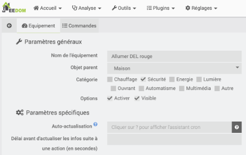
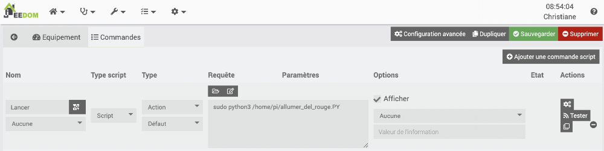
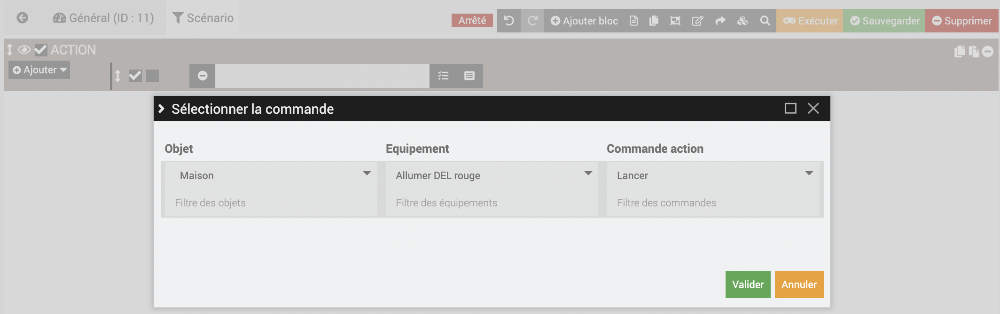
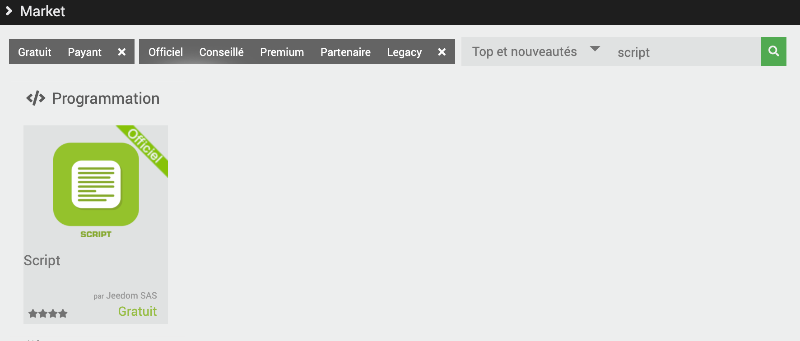
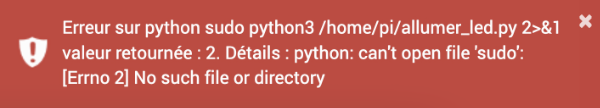
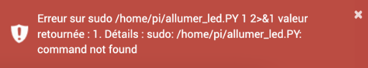
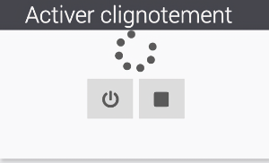
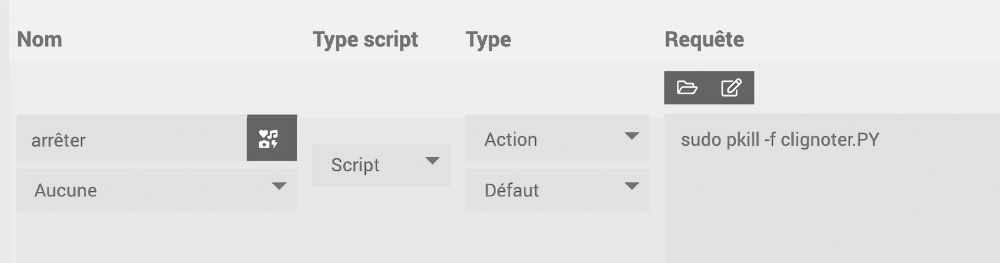

50. Contrôle GPIO avec Jeedom¶
50.1 En résumé...¶
Voici un résumé des informations essentielles du ou des prochains chapitres.
Notez que certaines fiches, qui font partie intégrante du cours, pourraient ne pas figurer dans ce résumé.
Je vous recommande d'effectuer une lecture de l'ensemble des fiches de ces chapitres afin de bien saisir les enjeux.
Lancer un script python avec le plugin script¶
Une fois le script Python écrit et testé à la ligne de commande, on peut le faire exécuter par Jeedom à l'aide du plugin Script.
Pour lancer le script, il faut ajouter un équipement (ce sera en fait une commande vers le script).
Rendez-vous dans le menu Plugins / Programmation / Script puis cliquez sur le +.
Donnez un nom à l'équipement, par exemple « Allumer DEL rouge ».
Cochez la case Activer pour que le script puisse être utilisé.
Si désiré, activez la case Visible pour rendre l'équipement visible sur le Dashboard. Notez que le script pourra fonctionner même s'il n'est pas visible.

Cliquez ensuite sur l'onglet Commandes puis sur Ajouter une commande script.
Donnez un nom à la commande (ex : Lancer).
Le type doit être à Action.
Dans la case Requête, entrez une commande sous la forme sudo python3 /chemin/nom_du_script.PY.
- Vous devez préciser le chemin complet du script.
- Le nom du fichier doit se terminer par .PY en majuscules (ou autre extension de votre choix) car l'extension .py est automatiquement interprétée par Jeedom comme du Python 2.
Après avoir sauvegardé, vous pouvez cliquer sur le bouton Tester afin de voir si tout fonctionne.

Le script Python, qui est une commande d'un équipement au yeux de Jeedom, peut désormais être utilisé au même titre que n'importe quelle autre commande dans vos scénarios Jeedom!

Arreter correctement un scenario avec boucle infinie¶
Si un scénario lance un script Python qui fait clignoter une DEL (donc avec boucle infinie), on pourra arrêter le clignotement à l'aide d'un autre scénario qui se charge de :
- Arrêter le scénario qui avait lancé le cligotement
 * Tuer le processus associé au script Python qui a lancé le clignotement à l'aide d'une commande du genre :
* Tuer le processus associé au script Python qui a lancé le clignotement à l'aide d'une commande du genre :
Terminal du Raspberry Pi
* S'assurer que la DEL est éteinte : + lancer un script Python qui se charge d'éteindre la DELou
50.2 Lancer un script Python avec le plugin Script¶
Le plugin Script, comme son nom le laisse entendre, permet de lancer à partir de Jeedom des scripts présents sur le Raspberry Pi.
Les possibilités offertes par ces scripts sont quasi illimitées. On s'en servira, notamment, de contrôler les ports du GPIO du Raspberry Pi.
Installation du plugin¶
Pour installer le plugin Script, rendez-vous dans Plugins / Gestion des plugins / Market.
Dans la zone de recherche, entrez script.
Cliquez sur le plugin Script - officiel par Jeedom SAS.

Activation du plugin¶
Dans l'interface de Jeedom, rendez-vous dans le menu Plugins / Programmation / Script puis cliquez sur l'icône Configuration.
Pour activer le plugin, cliquez sur le bouton Activer dans la zone État.
Édition d'un script¶
Bien entendu, pour que le plugin exécute un script, il faut éditer ce script.
Plusieurs types de scripts sont supportés :
- Script : Python ou Bash
- HTTP
- HTML
- XML
- JSON
Pour lancer une commande ou une série de commandes qui contrôlent une LED, un script Python est un excellent choix.
Pour éditer ce script, vous avez le choix entre :
- écrire le fichier directement sur le Pi par exemple avec l'éditeur nano
- l'écrire directement dans Jeedom
- l'écrire sur votre ordinateur personnel puis de le copier sur le Pi .
Attention : si vous éditez le script sur un ordinateur Windows, les caractères de fin de ligne ne sont pas reconnus par Linux et Jeedom réagira en vous disant que le fichier n'existe pas.
Vous devez absolument changer l'encodage des fins de lignes afin que Linux puisse utiliser le fichier.
Dans le cas d'un script Python 3, le nom du fichier doit se terminer par .PY en majuscules (ou autre extension de votre choix) car l'extension .py est automatiquement interprétée par Jeedom comme du Python 2.
Pour renommer votre script :
Terminal du Raspberry Pi
Emplacement des scripts¶
Le script Python peut être placé n'importe où sur le Raspberry Pi.
Sachez que si le script est placé dans le dossier /var/www/html ou dans un de ses sous-dossiers, il fera automatiquement partie de la copie de sécurité de Jeedom.
Mais j'avoue que pour fins de simplicité, je place souvent mes scripts sous /home/pi (le dossier personnel de l'usager pi) puisque c'est le dossier qui apparaît lorsqu'on accède au Terminal à partir d'un clavier et d'un écran branchés au Pi ou via SSH.
À ce moment, je suis responsable d'effectuer mes copies de sécurité.
Il revient à chacun d'assumer ses choix!
Remarquez que sous Plugins / Programmation / Script / Configuration, la case Chemin des scripts utilisateur indique l'emplacement où seront enregistrés les scripts qui sont créés directement dans Jeedom.

Lancement du script à partir de Jeedom¶
Pour lancer le script, il faut ajouter dans le plugin Script un équipement puis une commande.
Rendez-vous dans le menu Plugins / Programmation / Script puis cliquez sur le +.
Donnez un nom à l'équipement, par exemple « Allumer DEL rouge ».
Cochez la case Activer pour que le script puisse être utilisé.
Si désiré, activez la case Visible pour rendre l'équipement visible sur le Dashboard. Notez que le script pourra fonctionner même s'il n'est pas visible.
Cliquez ensuite sur l'onglet Commandes puis sur Ajouter une commande script.
Donnez un nom à la commande (ex : Lancer).
Le type doit être à Action.
Il est possible d'éditer le script directement dans Jeedom en cliquant sur l'icône Nouveau ou de faire référence à un script existant.
Dans cette démonstration, j'utilise un script existant.
Dans la case Requête, entrez une commande sous la forme sudo python3 /chemin/nom_du_script.PY.
Vous devez préciser le chemin complet du script.
Après avoir sauvegardé, vous pouvez cliquer sur le bouton Tester afin de voir si tout fonctionne.
Lancer le script à partir d'un scénario¶
Le script, qui est une commande d'un équipement au yeux de Jeedom, peut désormais être utilisé au même titre que n'importe quelle autre commande dans vos scénarios Jeedom!
Quelques erreurs courantes¶
Extension .PY¶
Dans le cas d'un script Python 3, il faut changer l'extension du fichier pour .PY (en majuscules).
Si le nom se termine par .py, il sera considéré par Jeedom comme étant un fichier Python 2 et Jeedom ajoutera automatiquement la commande python devant la commande entrée. Vous obtiendrez alors un message d'erreur du genre « Erreur sur python sudo python3 /home/pi/allumer_led.py 2>&1 valeur retournée : 2. Détails : python: can't open file 'sudo': [Errno 2] No such file or directory ».

sudo¶
Pour qu'un script Python puisse interagir avec le GPIO, vous devez précéder la commande par sudo.
Si vous ne le faites pas, vous obtiendrez un message du genre « Erreur sur python3 /home/pi/allumer_led.PY 2>&1 valeur retournée : 1. Détails : Traceback (most recent call last): File "/home/pi/allumer_led.PY", line 23, in GPIO.setup(led, GPIO.OUT) RuntimeError: No access to /dev/mem Try running as root! ».

Chemin du script¶
Vous devez spécifier le chemin complet du script.
Si vous ne le faites pas, vous obtiendrez un message du genre « Erreur sur sudo python3 allumer_led.PY 2>&1 valeur retournée : 2. Détails : python3: can't open file 'allumer_led.PY': [Errno 2] No such file or directory ».
![can't open file 'allumer_led.PY': [Errno 2] No such file or directory](../NotesDeCoursApical-420_3a4_vi_objets_connectes_1_a_2025_files/Jeedom-ErreurCheminNonPrecise.png)
Droits d'exécution ou python3¶
Un script Python peut être exécuté de deux façons : en faisant précéder son nom par python3 ou en donnant des droits d'exécution au fichier.
Si l'usager courant n'a pas les droits d'exécution sur le fichier et que vous n'avez pas fait précéder son nom par python3 dans la commande sous Jeedom, vous obtiendrez un message du genre « Erreursur sudo /home/pi/allumer_led.PY 2>&1 valeur retournée : 1. Détails :sudo /home/pi/allumer_led.PY: command not found ».

Pour plus d'information¶
« Plugin Script ». Plugin Script. https://doc.jeedom.com/fr_FR/plugins/programming/script/
50.3 Arrêter correctement un scénario avec boucle infinie¶
Règle générale, avec le plugin Scripts dans Jeedom, il faut éviter de lancer des scripts qui contiennent une boucle sans fin.
Parfois, cependant, la tâche à réaliser nécessite une telle boucle, par exemple pour faire clignoter une DEL branchée au GPIO,clignoter.
Rappelez-vous que lorsqu'on lance le script Python à la ligne de commande, il faut appuyer sur Ctrl+C pour l'arrêter. Mais quand c'est Jeedom qui le lance, ceci n'est pas possible.
Ceci pose problème dans un système domotique qui doit démarrer ou arrêter le clignotement à l'aide de scénarios. En effet, tant que le clignotement est en cours, aucun autre script Python ne peut travailler avec la broche utilisée, même pas pour lui envoyer le signal de s'éteindre. Si vous tentez de le faire, vous obtiendrez une erreur du genre « ... File "/home/pi/mon_script.PY", line 34, in GPIO.setup(del, GPIO.OUT) ... lgpio.error: 'GPIO not allocated'».
Pour qu'un scénario puisse arrêter correctement le clignotement, il doit :
- Arrêter le scénario qui a lancé le cligotement
- Tuer le processus associé au script Python qui a lancé le clignotement
- S'assurer que la DEL est éteinte
Arrêter le scénario qui a lancé le clignotement¶
Si vous faites afficher dans le Dashboard le scénario qui a lancé le clignotement, vous verrez une animation qui indique que le scénario est toujours en cours d'exécution et ce, même si vous avez pris soin de tuer le processus en charge du clignotement (technique présentée plus bas).

Heureusement, il est possible de demander au scénario qui doit arrêter le clignotement de commencer par arrêter le scénario précédent.
Pour qu'un scénario arrête un autre scénario, il faut choisir Sélectionner un mot-clé plutôt que Sélectionner la commande.

Dans la liste déroulante qui apparaît, sélectionnez Scénario. Ceci permet d'avoir un scénario qui agit sur un autre scénario.
À partir de là, vous pourrez sélectionner le scénario qui contient la boucle sans fin et choisir l'action Arrêter.
Tuer le processus associé au script Python qui a lancé le clignotement¶
Quand un script Python est lancé, il est associé à un processus dans le système d'exploitation.
Pour arrêter un script avec une boucle sans fin alors qu'il a été lancé au terminal, il est possible d'arrêter ce processus en appuyant sur les touches Ctrl+C.
Dans le cas où il a été lancé dans Jeedom, il faut utiliser la commande pkill suivie de -f puis du nom du script Python.
Cette commande peut être testée au terminal.
Terminal du Raspberry Pi
Dans Jeedom, le processus sera tué à l'aide du plugin Script. Il faut créer une commande de type action dans la quelle on entre la commande pkill complète.

Quand vous lancez cette commande, il peut arriver que Jeedom affiche un message disant que la commande a retourné un code 15.
Vous pouvez ignorer ce message.
S'assurer que la DEL est éteinte¶
Dans le cas d'un script qui fait clignoter une DEL, il peut arriver que la DEL demeure allumée après que le processus ait été tué. Tout dépend de l'état dans lequel elle se trouvait au moment précis où le processus a été tué.
Pour l'éteindre, vous avez deux choix :
- lancer un script Python qui se charge d'éteindre la DEL
ou * lancer le script Python qui se charge de réinitialiser toutes les broches
50.4 Lancer un script Python avec paramètre à partir de Jeedom¶
Un script Python peut recevoir des paramètres.
Le plugin Script de Jeedom permet de lancer un script Python en lui passant un ou plusieurs paramètres.
Il suffit d'entrer dans la case Requête une chaîne au format :
sudo python3 /chemin/nom_script.PY paramètre